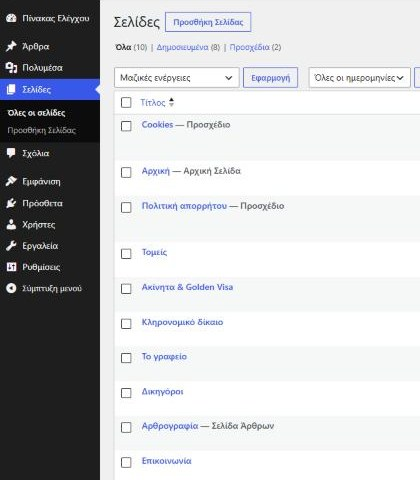
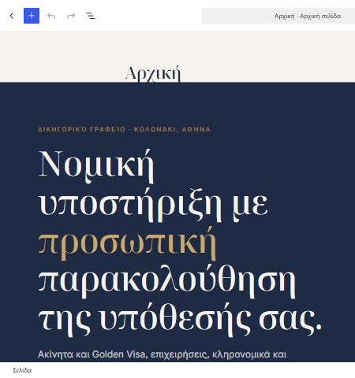
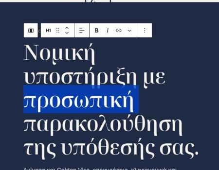
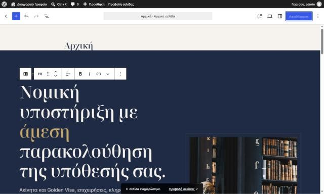
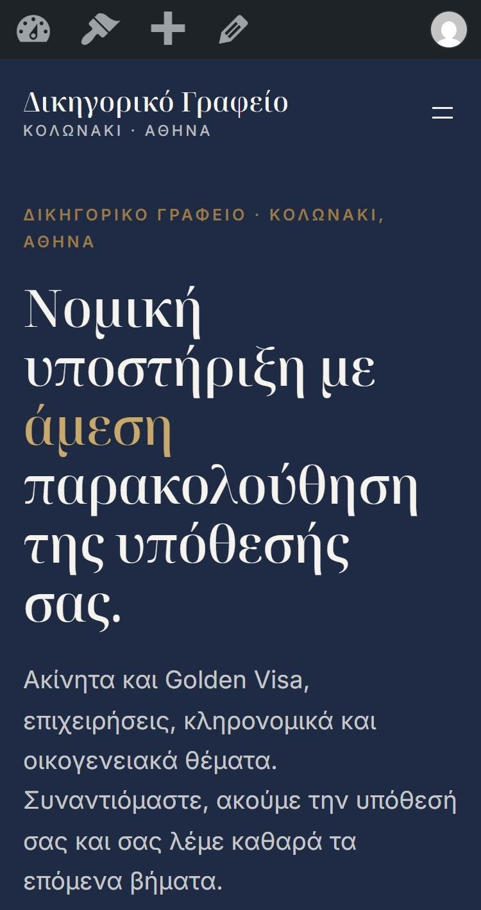
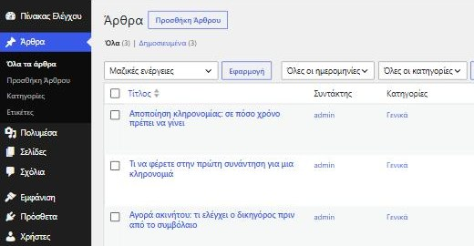
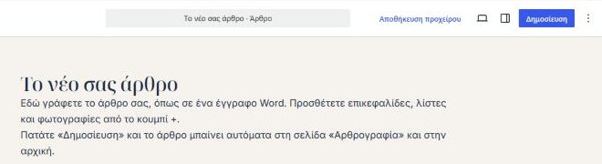
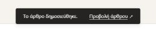
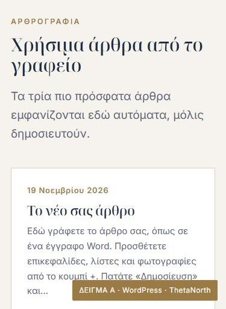

Αλλαγή κειμένου
1Διαλέγετε σελίδα
Στο μενού «Σελίδες» βλέπετε όλες τις σελίδες του site. Πατάτε σε αυτή που θέλετε να αλλάξετε.

2Η σελίδα ανοίγει όπως στο site
Τα κείμενα είναι στη θέση τους, με τα ίδια χρώματα και γράμματα. Πατάτε πάνω στο κείμενο που θέλετε.

3Γράφετε
Επιλέγετε τη λέξη και γράφετε τη νέα, όπως σε ένα έγγραφο Word. Εδώ το «προσωπική» γίνεται «άμεση».

4Αποθήκευση
Πατάτε το μπλε κουμπί «Αποθήκευση» πάνω δεξιά. Κάτω εμφανίζεται «Η σελίδα ενημερώθηκε».

5Η αλλαγή φαίνεται αμέσως
Το site από κινητό, αμέσως μετά. Η καινούργια λέξη είναι στη θέση της, με το ίδιο χρώμα.

Νέο άρθρο
6Άρθρα
Στο «Άρθρα» βλέπετε όσα έχουν δημοσιευτεί. Για νέο, πατάτε «Προσθήκη Άρθρου».

7Τίτλος και κείμενο
Γράφετε τίτλο και κείμενο. Επικεφαλίδες, λίστες και φωτογραφίες μπαίνουν από το μπλε κουμπί + πάνω αριστερά.

8Δημοσίευση
Πατάτε το μπλε κουμπί «Δημοσίευση» πάνω δεξιά. Κάτω εμφανίζεται «Το άρθρο δημοσιεύθηκε».

9Μπαίνει μόνο του στην αρχική
Τα 3 πιο πρόσφατα άρθρα εμφανίζονται αυτόματα στην αρχική, με την ημερομηνία τους. Δεν χρειάζεται να αλλάξετε τίποτα άλλο.

Πατήστε σε μια εικόνα για να τη δείτε μεγάλη. Αν δεν θέλετε να ασχολείστε με το site, μας στέλνετε τις αλλαγές και τις περνάμε εμείς.